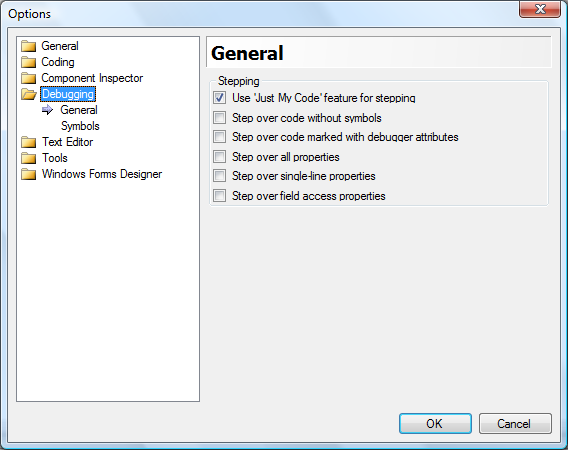
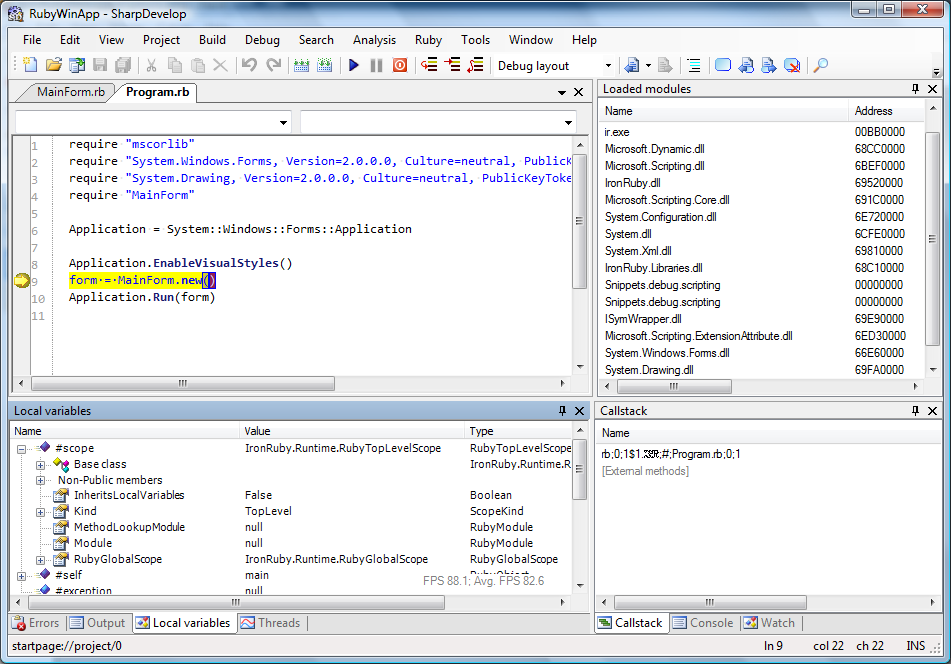
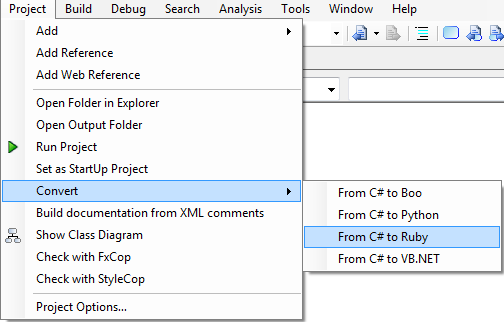

Support for IronRuby in SharpDevelop has moved on since the last alpha release of the IronRuby addin. This addin now ships with SharpDevelop 3.2 which is available to download from the build server. The main new features are support for IronRuby 1.0 RC 1 and the ability to debug IronRuby applications.
Currently there is no support for IronRuby code completion.
Now we will take a look at some of the new features in more depth.
After you create an IronRuby application you can run it immediately without having to edit the project options as you did previously. The project templates have been updated so that everything is ready to go straight away. Simply select Run from the Debug menu to run your application with the IronRuby console.
In order to get the debugger to work well when debugging an IronRuby application you should change the debugger options. To open the debugger options select Options from the Tools menu, then select the Debugging category. Only the 'Just My Code' feature should be selected and everything else should be unselected, as shown in the screenshot below.

You can set your breakpoints in the normal way either by clicking in the left hand margin of the text editor or by selecting Toggle Breakpoint from the Debug menu.
Selecting Run from the Debug menu will run your IronRuby application under the debugger. Alternatively you can select Run from the Ruby menu which will run the code currently active text editor window. Selecting either of these will run the IronRuby console in debug mode with SharpDevelop's debugger.

To convert a VB.NET or C# project to IronRuby open the project and then select Convert from C# to Ruby or Convert from VB.NET to Ruby from the Project menu.

The IronRuby 1.0 RC 1 download from codeplex includes extra Ruby libraries that are not shipping with SharpDevelop. If you want to use these libraries then download the IronRuby zip file and copy the lib folder to the IronRuby addin folder:
C:\Program Files\SharpDevelop\3.0\AddIns\AddIns\BackendBindings\RubyBinding
The IronRuby console (ir.exe) is configured to look in the lib subfolder by information in the ir.exe.config file:
<options> <set language='Ruby' option='LibraryPaths' value='lib\IronRuby;lib\ruby\site_ruby\1.8;lib\ruby\site_ruby;lib\ruby\1.8'/> </options>
If you want to put these Ruby libraries somewhere else then the ir.exe.config file should be modified.